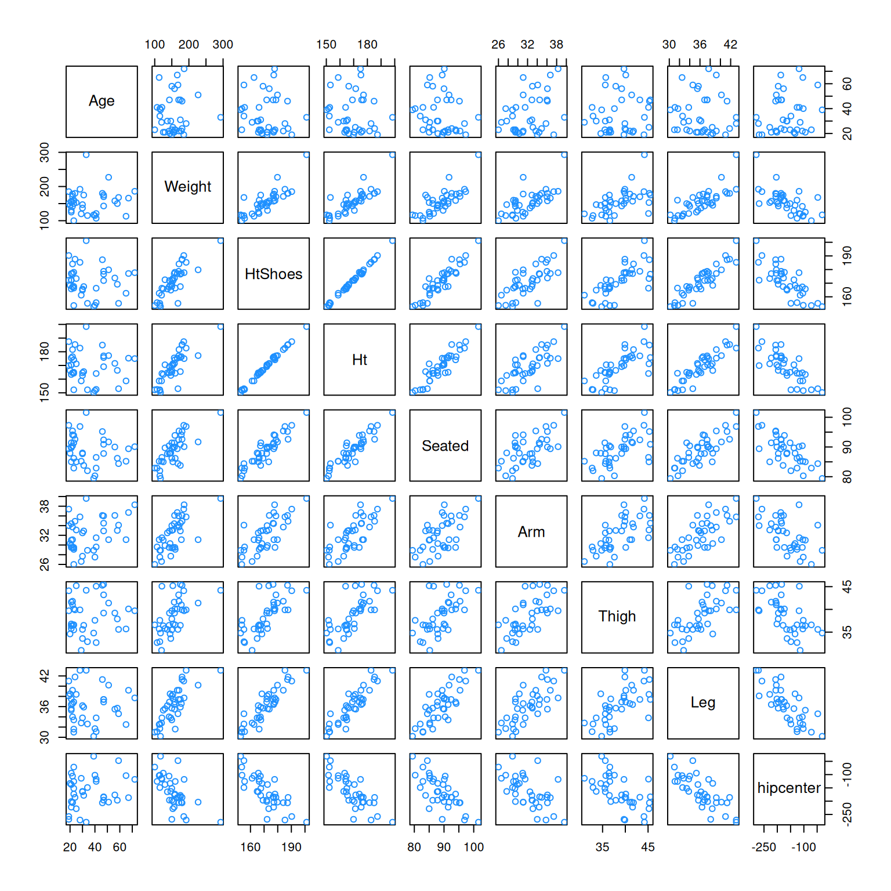
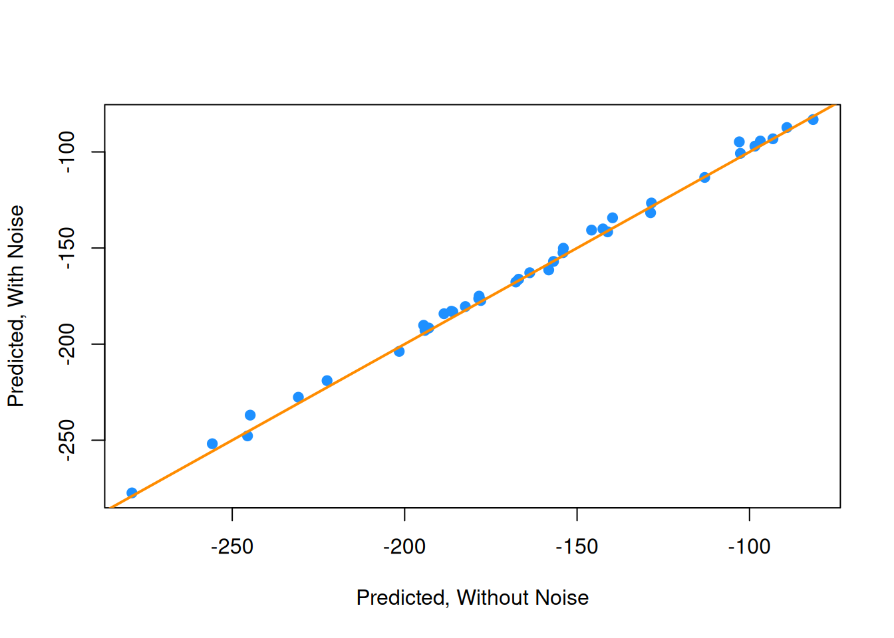
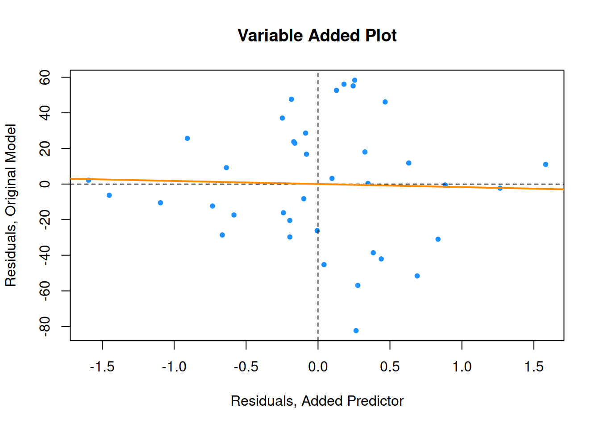
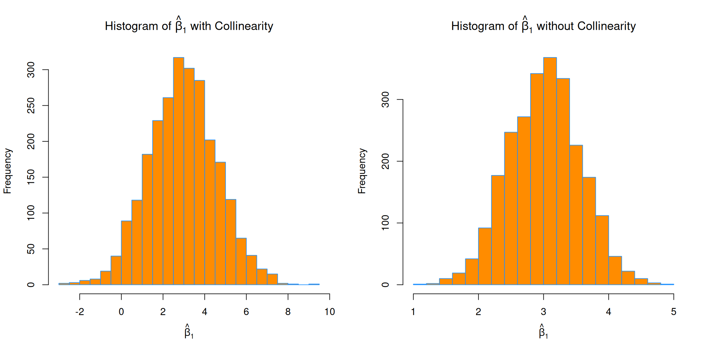
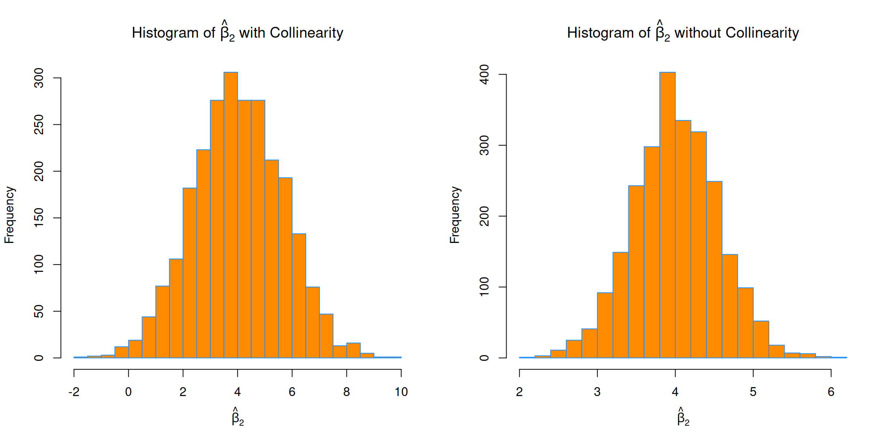
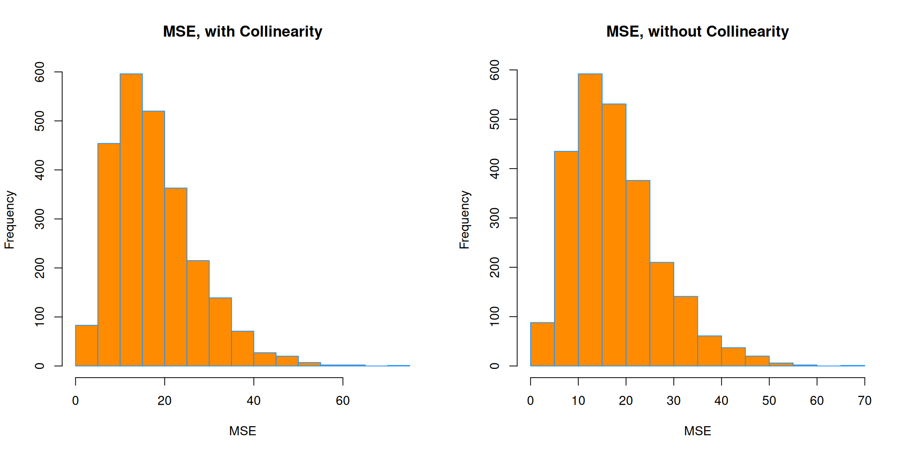

gen_exact_collin_data <- function(num_samples = 100) {
x1 = rnorm(n = num_samples, mean = 80, sd = 10)
x2 = rnorm(n = num_samples, mean = 70, sd = 5)
x3 = 2 * x1 + 4 * x2 + 3
y = 3 + x1 + x2 + rnorm(n = num_samples, mean = 0, sd = 1)
data.frame(y, x1, x2, x3)
}15 Collinearity
“If I look confused it is because I am thinking.”
— Samuel Goldwyn
After reading this chapter you will be able to:
- Identify collinearity in regression.
- Understand the effect of collinearity on regression models.
15.1 Exact Collinearity
Let’s create a dataset where one of the predictors, \(x_3\), is a linear combination of the other predictors.
Notice that the way we are generating this data, the response \(y\) only really depends on \(x_1\) and \(x_2\).
set.seed(42)
exact_collin_data <- gen_exact_collin_data()
head(exact_collin_data) y x1 x2 x3
1 170.7135 93.70958 76.00483 494.4385
2 152.9106 74.35302 75.22376 452.6011
3 152.7866 83.63128 64.98396 430.1984
4 170.6306 86.32863 79.24241 492.6269
5 152.3320 84.04268 66.66613 437.7499
6 151.3155 78.93875 70.52757 442.9878What happens when we attempt to fit a regression model in R using all of the predictors?
exact_collin_fit <- lm(y ~ x1 + x2 + x3, data = exact_collin_data)
summary(exact_collin_fit)
Call:
lm(formula = y ~ x1 + x2 + x3, data = exact_collin_data)
Residuals:
Min 1Q Median 3Q Max
-2.57662 -0.66188 -0.08253 0.63706 2.52057
Coefficients: (1 not defined because of singularities)
Estimate Std. Error t value Pr(>|t|)
(Intercept) 2.957336 1.735165 1.704 0.0915 .
x1 0.985629 0.009788 100.702 <2e-16 ***
x2 1.017059 0.022545 45.112 <2e-16 ***
x3 NA NA NA NA
---
Signif. codes: 0 '***' 0.001 '**' 0.01 '*' 0.05 '.' 0.1 ' ' 1
Residual standard error: 1.014 on 97 degrees of freedom
Multiple R-squared: 0.9923, Adjusted R-squared: 0.9921
F-statistic: 6236 on 2 and 97 DF, p-value: < 2.2e-16We see that R simply decides to exclude a variable. Why is this happening?
X <- cbind(1, as.matrix(exact_collin_data[,-1]))
solve(t(X) %*% X)If we attempt to find \(\boldsymbol{\hat{\beta}}\) using \(\left( \boldsymbol{X}^T \boldsymbol{X} \right)^{-1}\), we see that this is not possible, due to the fact that the columns of \(\boldsymbol{X}\) are linearly dependent. The previous lines of code were not run, because they produce an error!
When this happens, we say there is exact collinearity in the dataset.
As a result of this issue, R essentially chose to fit the model y ~ x1 + x2. However notice that two other models would accomplish exactly the same fit.
fit1 <- lm(y ~ x1 + x2, data = exact_collin_data)
fit2 <- lm(y ~ x1 + x3, data = exact_collin_data)
fit3 <- lm(y ~ x2 + x3, data = exact_collin_data)We see that the fitted values for each of the three models are exactly the same. This is a result of \(x_3\) containing all of the information from \(x_1\) and \(x_2\). As long as one of \(x_1\) or \(x_2\) is included in the model, \(x_3\) can be used to recover the information from the variable not included.
all.equal(fitted(fit1), fitted(fit2))[1] TRUEall.equal(fitted(fit2), fitted(fit3))[1] TRUEWhile their fitted values are all the same, their estimated coefficients are wildly different. The sign of \(x_2\) is switched in two of the models! So only fit1 properly explains the relationship between the variables, fit2 and fit3 still predict as well as fit1, despite the coefficients having little to no meaning, a concept we will return to later.
coef(fit1)(Intercept) x1 x2
2.9573357 0.9856291 1.0170586 coef(fit2)(Intercept) x1 x3
2.1945418 0.4770998 0.2542647 coef(fit3)(Intercept) x2 x3
1.4788921 -0.9541995 0.4928145 15.2 Collinearity
Exact collinearity is an extreme example of collinearity, which occurs in multiple regression when predictor variables are highly correlated. Collinearity is often called multicollinearity, since it is a phenomenon that really only occurs during multiple regression.
Looking at the seatpos dataset from the faraway package, we will see an example of this concept. The predictors in this dataset are various attributes of car drivers, such as their height, weight and age. The response variable hipcenter measures the “horizontal distance of the midpoint of the hips from a fixed location in the car in mm.” Essentially, it measures the position of the seat for a given driver. This is potentially useful information for car manufacturers considering comfort and safety when designing vehicles.
We will attempt to fit a model that predicts hipcenter. Two predictor variables are immediately interesting to us: HtShoes and Ht. We certainly expect a person’s height to be highly correlated to their height when wearing shoes. We’ll pay special attention to these two variables when fitting models.
library(faraway)
pairs(seatpos, col = "dodgerblue")
round(cor(seatpos), 2) Age Weight HtShoes Ht Seated Arm Thigh Leg hipcenter
Age 1.00 0.08 -0.08 -0.09 -0.17 0.36 0.09 -0.04 0.21
Weight 0.08 1.00 0.83 0.83 0.78 0.70 0.57 0.78 -0.64
HtShoes -0.08 0.83 1.00 1.00 0.93 0.75 0.72 0.91 -0.80
Ht -0.09 0.83 1.00 1.00 0.93 0.75 0.73 0.91 -0.80
Seated -0.17 0.78 0.93 0.93 1.00 0.63 0.61 0.81 -0.73
Arm 0.36 0.70 0.75 0.75 0.63 1.00 0.67 0.75 -0.59
Thigh 0.09 0.57 0.72 0.73 0.61 0.67 1.00 0.65 -0.59
Leg -0.04 0.78 0.91 0.91 0.81 0.75 0.65 1.00 -0.79
hipcenter 0.21 -0.64 -0.80 -0.80 -0.73 -0.59 -0.59 -0.79 1.00After loading the faraway package, we do some quick checks of correlation between the predictors. Visually, we can do this with the pairs() function, which plots all possible scatterplots between pairs of variables in the dataset.
We can also do this numerically with the cor() function, which when applied to a dataset, returns all pairwise correlations. Notice this is a symmetric matrix. Recall that correlation measures strength and direction of the linear relationship between two variables. The correlation between Ht and HtShoes is extremely high. So high, that rounded to two decimal places, it appears to be 1!
Unlike exact collinearity, here we can still fit a model with all of the predictors, but what effect does this have?
hip_model <- lm(hipcenter ~ ., data = seatpos)
summary(hip_model)
Call:
lm(formula = hipcenter ~ ., data = seatpos)
Residuals:
Min 1Q Median 3Q Max
-73.827 -22.833 -3.678 25.017 62.337
Coefficients:
Estimate Std. Error t value Pr(>|t|)
(Intercept) 436.43213 166.57162 2.620 0.0138 *
Age 0.77572 0.57033 1.360 0.1843
Weight 0.02631 0.33097 0.080 0.9372
HtShoes -2.69241 9.75304 -0.276 0.7845
Ht 0.60134 10.12987 0.059 0.9531
Seated 0.53375 3.76189 0.142 0.8882
Arm -1.32807 3.90020 -0.341 0.7359
Thigh -1.14312 2.66002 -0.430 0.6706
Leg -6.43905 4.71386 -1.366 0.1824
---
Signif. codes: 0 '***' 0.001 '**' 0.01 '*' 0.05 '.' 0.1 ' ' 1
Residual standard error: 37.72 on 29 degrees of freedom
Multiple R-squared: 0.6866, Adjusted R-squared: 0.6001
F-statistic: 7.94 on 8 and 29 DF, p-value: 1.306e-05One of the first things we should notice is that the \(F\)-test for the regression tells us that the regression is significant, however each individual predictor is not. Another interesting result is the opposite signs of the coefficients for Ht and HtShoes. This should seem rather counter-intuitive. Increasing Ht increases hipcenter, but increasing HtShoes decreases hipcenter?
This happens as a result of the predictors being highly correlated. For example, the HtShoe variable explains a large amount of the variation in Ht. When they are both in the model, their effects on the response are lessened individually, but together they still explain a large portion of the variation of hipcenter.
We define \(R_j^2\) to be the proportion of observed variation in the \(j\)-th predictor explained by the other predictors. In other words \(R_j^2\) is the multiple R-Squared for the regression of \(x_j\) on each of the other predictors.
ht_shoes_model <- lm(HtShoes ~ . - hipcenter, data = seatpos)
summary(ht_shoes_model)$r.squared[1] 0.9967472Here we see that the other predictors explain \(99.67\%\) of the variation in HtShoe. When fitting this model, we removed hipcenter since it is not a predictor.
Variance Inflation Factor.
Now note that the variance of \(\hat{\beta_j}\) can be written as
\[ \text{Var}(\hat{\beta_j}) = \sigma^2 C_{jj} = \sigma^2 \left( \frac{1}{1 - R_j^2} \right) \frac{1}{S_{x_j x_j}} \]
where
\[ S_{x_j x_j} = \sum(x_{ij}-\bar{x}_j)^2. \]
This gives us a way to understand how collinearity affects our regression estimates.
We will call,
\[ \frac{1}{1 - R_j^2} \]
the variance inflation factor. The variance inflation factor quantifies the effect of collinearity on the variance of our regression estimates. When \(R_j^2\) is large, that is close to 1, \(x_j\) is well explained by the other predictors. With a large \(R_j^2\) the variance inflation factor becomes large. This tells us that when \(x_j\) is highly correlated with other predictors, our estimate of \(\beta_j\) is highly variable.
The vif function from the faraway package calculates the VIFs for each of the predictors of a model.
vif(hip_model) Age Weight HtShoes Ht Seated Arm Thigh
1.997931 3.647030 307.429378 333.137832 8.951054 4.496368 2.762886
Leg
6.694291 In practice it is common to say that any VIF greater than \(5\) is cause for concern. So in this example we see there is a huge multicollinearity issue as many of the predictors have a VIF greater than 5.
Let’s further investigate how the presence of collinearity actually affects a model. If we add a moderate amount of noise to the data, we see that the estimates of the coefficients change drastically. This is a rather undesirable effect. Adding random noise should not affect the coefficients of a model.
set.seed(1337)
noise <- rnorm(n = nrow(seatpos), mean = 0, sd = 5)
hip_model_noise <- lm(hipcenter + noise ~ ., data = seatpos)Adding the noise had such a large effect, the sign of the coefficient for Ht has changed.
coef(hip_model) (Intercept) Age Weight HtShoes Ht Seated
436.43212823 0.77571620 0.02631308 -2.69240774 0.60134458 0.53375170
Arm Thigh Leg
-1.32806864 -1.14311888 -6.43904627 coef(hip_model_noise) (Intercept) Age Weight HtShoes Ht Seated
415.32909380 0.76578240 0.01910958 -2.90377584 -0.12068122 2.03241638
Arm Thigh Leg
-1.02127944 -0.89034509 -5.61777220 This tells us that a model with collinearity is bad at explaining the relationship between the response and the predictors. We cannot even be confident in the direction of the relationship. However, does collinearity affect prediction?
plot(fitted(hip_model), fitted(hip_model_noise), col = "dodgerblue", pch = 20,
xlab = "Predicted, Without Noise", ylab = "Predicted, With Noise", cex = 1.5)
abline(a = 0, b = 1, col = "darkorange", lwd = 2)
We see that by plotting the predicted values using both models against each other, they are actually rather similar.
Let’s now look at a smaller model,
hip_model_small <- lm(hipcenter ~ Age + Arm + Ht, data = seatpos)
summary(hip_model_small)
Call:
lm(formula = hipcenter ~ Age + Arm + Ht, data = seatpos)
Residuals:
Min 1Q Median 3Q Max
-82.347 -24.745 -0.094 23.555 58.314
Coefficients:
Estimate Std. Error t value Pr(>|t|)
(Intercept) 493.2491 101.0724 4.880 2.46e-05 ***
Age 0.7988 0.5111 1.563 0.12735
Arm -2.9385 3.5210 -0.835 0.40979
Ht -3.4991 0.9954 -3.515 0.00127 **
---
Signif. codes: 0 '***' 0.001 '**' 0.01 '*' 0.05 '.' 0.1 ' ' 1
Residual standard error: 36.12 on 34 degrees of freedom
Multiple R-squared: 0.6631, Adjusted R-squared: 0.6333
F-statistic: 22.3 on 3 and 34 DF, p-value: 3.649e-08vif(hip_model_small) Age Arm Ht
1.749943 3.996766 3.508693 Immediately we see that multicollinearity isn’t an issue here.
anova(hip_model_small, hip_model)Analysis of Variance Table
Model 1: hipcenter ~ Age + Arm + Ht
Model 2: hipcenter ~ Age + Weight + HtShoes + Ht + Seated + Arm + Thigh +
Leg
Res.Df RSS Df Sum of Sq F Pr(>F)
1 34 44354
2 29 41262 5 3091.9 0.4346 0.8207Also notice that using an \(F\)-test to compare the two models, we would prefer the smaller model.
We now investigate the effect of adding another variable to this smaller model. Specifically we want to look at adding the variable HtShoes. So now our possible predictors are HtShoes, Age, Arm, and Ht. Our response is still hipcenter.
To quantify this effect we will look at a variable added plot and a partial correlation coefficient. For both of these, we will look at the residuals of two models:
- Regressing the response (
hipcenter) against all of the predictors except the predictor of interest (HtShoes). - Regressing the predictor of interest (
HtShoes) against the other predictors (Age,Arm, andHt).
ht_shoes_model_small <- lm(HtShoes ~ Age + Arm + Ht, data = seatpos)So now, the residuals of hip_model_small give us the variation of hipcenter that is unexplained by Age, Arm, and Ht. Similarly, the residuals of ht_shoes_model_small give us the variation of HtShoes unexplained by Age, Arm, and Ht.
The correlation of these two residuals gives us the partial correlation coefficient of HtShoes and hipcenter with the effects of Age, Arm, and Ht removed.
cor(resid(ht_shoes_model_small), resid(hip_model_small))[1] -0.03311061Since this value is small, close to zero, it means that the variation of hipcenter that is unexplained by Age, Arm, and Ht shows very little correlation with the variation of HtShoes that is not explained by Age, Arm, and Ht. Thus adding HtShoes to the model would likely be of little benefit.
Similarly a variable added plot visualizes these residuals against each other. It is also helpful to regress the residuals of the response against the residuals of the predictor and add the regression line to the plot.
plot(resid(hip_model_small) ~ resid(ht_shoes_model_small),
col = "dodgerblue", pch = 20,
xlab = "Residuals, Added Predictor",
ylab = "Residuals, Original Model",
main = "Variable Added Plot")
abline(h = 0, lty = 2)
abline(v = 0, lty = 2)
abline(lm(resid(hip_model_small) ~ resid(ht_shoes_model_small)),
col = "darkorange", lwd = 2)
Here the variable added plot shows almost no linear relationship. This tells us that adding HtShoes to the model would probably not be worthwhile. Since its variation is largely explained by the other predictors, adding it to the model will not do much to improve the model. However it will increase the variation of the estimates and make the model much harder to interpret.
Had there been a strong linear relationship here, thus a large partial correlation coefficient, it would likely have been useful to add the additional predictor to the model.
This trade-off is mostly true in general. As a model gets more predictors, errors will get smaller and its prediction will be better, but it will be harder to interpret. This is why, if we are interested in explaining the relationship between the predictors and the response, we often want a model that fits well, but with a small number of predictors with little correlation.
Next chapter we will learn about methods to find models that both fit well, but also have a small number of predictors. We will also discuss overfitting. Although, adding additional predictors will always make errors smaller, sometimes we will be “fitting the noise” and such a model will not generalize to additional observations well.
15.3 Simulation
Here we simulate example data with and without collinearity. We will note the difference in the distribution of the estimates of the \(\beta\) parameters, in particular their variance. However, we will also notice the similarity in their \(MSE\).
We will use the model,
\[ Y = \beta_0 + \beta_1 x_1 + \beta_2 x_2 + \epsilon \]
where \(\epsilon \sim N(\mu = 0, \sigma^2 = 25)\) and the \(\beta\) coefficients defined below.
set.seed(42)
beta_0 <- 7
beta_1 <- 3
beta_2 <- 4
sigma <- 5We will use a sample size of 10, and 2500 simulations for both situations.
sample_size <- 10
num_sim <- 2500We’ll first consider the situation with a collinearity issue, so we manually create the two predictor variables.
x1 <- c(1, 2, 3, 4, 5, 6, 7, 8, 9, 10)
x2 <- c(1, 2, 3, 4, 5, 7, 6, 10, 9, 8)c(sd(x1), sd(x2))[1] 3.02765 3.02765cor(x1, x2)[1] 0.9393939Notice that they have extremely high correlation.
true_line_bad <- beta_0 + beta_1 * x1 + beta_2 * x2
beta_hat_bad <- matrix(0, num_sim, 2)
mse_bad <- rep(0, num_sim)We perform the simulation 2500 times, each time fitting a regression model, and storing the estimated coefficients and the MSE.
for (s in 1:num_sim) {
y = true_line_bad + rnorm(n = sample_size, mean = 0, sd = sigma)
reg_out = lm(y ~ x1 + x2)
beta_hat_bad[s, ] = coef(reg_out)[-1]
mse_bad[s] = mean(resid(reg_out) ^ 2)
}Now we move to the situation without a collinearity issue, so we again manually create the two predictor variables.
z1 <- c(1, 2, 3, 4, 5, 6, 7, 8, 9, 10)
z2 <- c(9, 2, 7, 4, 5, 6, 3, 8, 1, 10)Notice that the standard deviations of each are the same as before, however, now the correlation is extremely close to 0.
c(sd(z1), sd(z2))[1] 3.02765 3.02765cor(z1, z2)[1] 0.03030303true_line_good <- beta_0 + beta_1 * z1 + beta_2 * z2
beta_hat_good <- matrix(0, num_sim, 2)
mse_good <- rep(0, num_sim)We then perform simulations and store the same results.
for (s in 1:num_sim) {
y = true_line_good + rnorm(n = sample_size, mean = 0, sd = sigma)
reg_out = lm(y ~ z1 + z2)
beta_hat_good[s, ] = coef(reg_out)[-1]
mse_good[s] = mean(resid(reg_out) ^ 2)
}We’ll now investigate the differences.
par(mfrow = c(1, 2))
hist(beta_hat_bad[, 1],
col = "darkorange",
border = "dodgerblue",
main = expression("Histogram of " *hat(beta)[1]* " with Collinearity"),
xlab = expression(hat(beta)[1]),
breaks = 20)
hist(beta_hat_good[, 1],
col = "darkorange",
border = "dodgerblue",
main = expression("Histogram of " *hat(beta)[1]* " without Collinearity"),
xlab = expression(hat(beta)[1]),
breaks = 20)
First, for \(\beta_1\), which has a true value of \(3\), we see that both with and without collinearity, the simulated values are centered near \(3\).
mean(beta_hat_bad[, 1])[1] 2.963325mean(beta_hat_good[, 1])[1] 3.013414The way the predictors were created, the \(S_{x_j x_j}\) portion of the variance is the same for the predictors in both cases, but the variance is still much larger in the simulations performed with collinearity. The variance is so large in the collinear case, that sometimes the estimated coefficient for \(\beta_1\) is negative!
sd(beta_hat_bad[, 1])[1] 1.633294sd(beta_hat_good[, 1])[1] 0.5484684par(mfrow = c(1, 2))
hist(beta_hat_bad[, 2],
col = "darkorange",
border = "dodgerblue",
main = expression("Histogram of " *hat(beta)[2]* " with Collinearity"),
xlab = expression(hat(beta)[2]),
breaks = 20)
hist(beta_hat_good[, 2],
col = "darkorange",
border = "dodgerblue",
main = expression("Histogram of " *hat(beta)[2]* " without Collinearity"),
xlab = expression(hat(beta)[2]),
breaks = 20)
We see the same issues with \(\beta_2\). On average the estimates are correct, but the variance is again much larger with collinearity.
mean(beta_hat_bad[, 2])[1] 4.025059mean(beta_hat_good[, 2])[1] 4.004913sd(beta_hat_bad[, 2])[1] 1.642592sd(beta_hat_good[, 2])[1] 0.5470381par(mfrow = c(1, 2))
hist(mse_bad,
col = "darkorange",
border = "dodgerblue",
main = "MSE, with Collinearity",
xlab = "MSE")
hist(mse_good,
col = "darkorange",
border = "dodgerblue",
main = "MSE, without Collinearity",
xlab = "MSE")
Interestingly, in both cases, the MSE is roughly the same on average. Again, this is because collinearity affects a model’s ability to explain, but not predict.
mean(mse_bad)[1] 17.7186mean(mse_good)[1] 17.70513